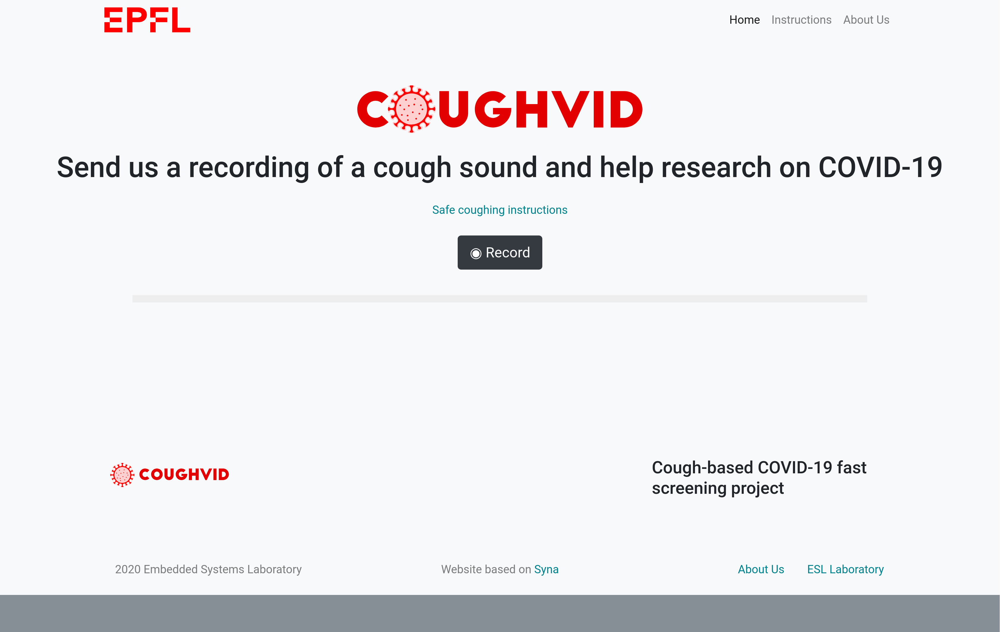
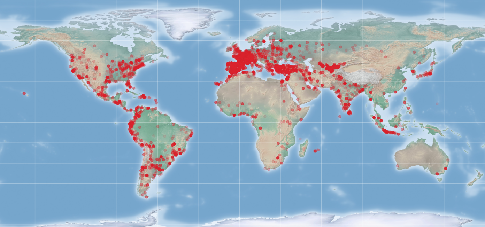
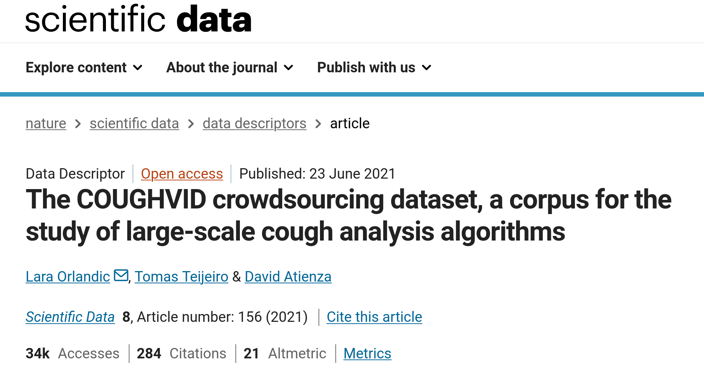
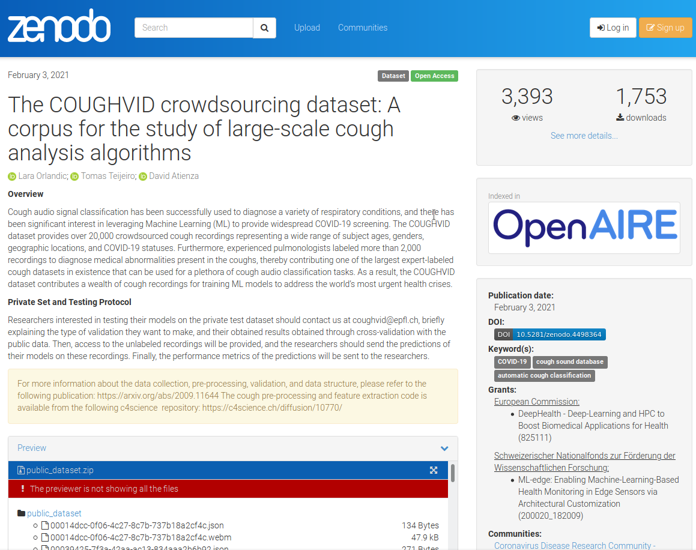
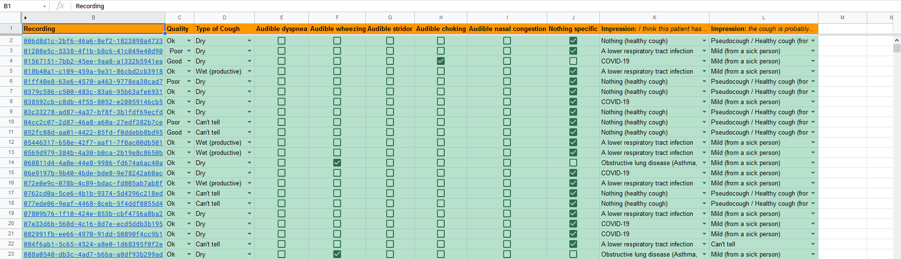
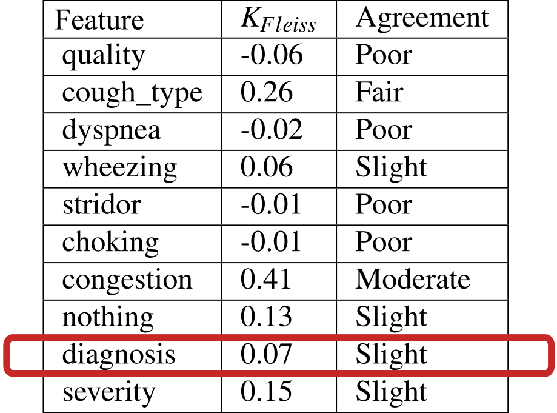
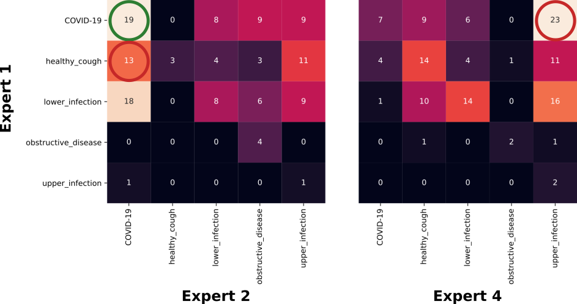

An
✦ ✧ ✦ ✧ ✦
Optimistic
View of the
⛓
⛓
Awful
World of Research (in AI)
Tomas Teijeiro
BCAM - Basque Center for Applied Mathematics
I Xornada Investigadores CAMELIA
CiTIUS - April 14, 2026


The PhD
Learning to read and write
The PhD
Learning to read and write
🧭 Objectives
- Mastering the scientific method.
- Producing original contributions in a supervised way.
- Successfully communicating and publishing scientific findings.
- Developing critical thinking.
☑️ Indicators
- Number of Q1 papers.
- International "top" conferences (NeurIPS, ICLR, ECAI, ...).
- Prizes (Best paper/poster awards, PhD award, ...).
- Widespread software, datasets, ...
PhD Singularities
Non-linear return on effort
- You spend months working on ideas that fail miserably...
- But in a couple of days (or even hours), you may set-up the main progress for the full project.
Time relativity
Distressing Panic in AI Research
📚 The "already solved" illusion
A quick literature review makes it feel like every conceivable problem has already been successfully addressed using AI.
⏱️ The arXiv paranoia
Constant background anxiety that another research group is stepping on your toes and will publish your exact idea tomorrow.
Back in 2017...
I was finishing my PhD thesis on ECG signal interpretation, when...
Physionet/CinC Challenge 2017
- Short, single-lead ECG segments, classified as a whole.
- 8528 records for training, 3658 for testing.
- 4 target classes:
- Normal Sinus Rhythm.
- Atrial Fibrillation.
- Other Rhythm.
- Noise.
- More than 75 participant teams.
- Algorithms were independently evaluated.


Scores of the Top-25 Approaches


Crash course on ECG interpretation


- Irregularly irregular heart rhythm.
- Absence of P waves.
- Presence of f waves.
How Well does DL Reproduce Expert Knowledge?
Given a sequence of RR intervals $[RR_1, \ldots, $$_n]$ in a 30-second window, check if:
- Dataset: Public MIT-BIH Arrhythmia Database, MLII Lead
- 37 records for training, 9 for testing.
- Segments of 30 seconds duration, with different overlapping for assessing the relevance of the dataset size.
- Not so imbalanced dataset: 75% negatives, 25% positives.
- Model: State-of-the-art network achieving good performance in the Physionet Challenge.
- Requires signal abstraction (Heart beat detection)
- Requires distance calculations (RRs)
- Requires counting up to 3.
- Requires a logical "OR" operation.

(65712 training samples)
What are the Learning Difficulties?


The Postdoc
Facing the contradictions
The Postdoc
Facing the contradictions
🧭 Objectives
- Developing new research questions independently.
- Broadening scientific outputs.
- Initiating funding and collaboration.
- Co-supervising or mentoring young researchers.
☑️ Indicators
- Number of Q1 papers.
- Number of supervised Master/PhD students.
- Institution ranking
- Invited keynotes.
- Patents.
- Superlinear h-index evolution.
Postdoc pitfalls
🎭 The identity crisis
This is the most heterogeneous stage of the academic career. Depending on the lab and the funding, you may have different profiles (or multiple of them!):
- Glorified PhD student.
- Highly-skilled technician.
- Underpaid "mini-PI".
🪤 Productivity trap
You are at the peak of your technical capabilities. Yet, to progress in your career, you must gradually abandon the exciting work to take on bureaucratic and managerial tasks that feel like a complete waste of time and talent.
🎲 The critical role of luck
Measuring scientific "success"
🧠 Human Brain Project
EU FET Flagship project in brain research.
- Funder: H2020
- Budget: €88.000.000
- Role: Task Leader (Edge-AI)
🏥 DeepHealth
HPC to boost Biomedical applications for health.
- Funder: H2020
- Budget: €12.774.854
- Role: WP Tech Leader
🩺 DIGIPREDICT
Digital Twins to predict infectious disease progression.
- Funder: H2020
- Budget: €5.978.343
- Role: WP Leader, DMP coordinator
🌀 PEDESITE
Personalized epilepsy monitoring with wearables.
- Funder: Swiss SNF
- Budget: €2.610.195
- Role: WP Leader
🦵 Inmodi
Multimodal assessment of knee joint health status.
- Funder: Innosuisse
- Budget: €443.000
- Role: WP Leader
(But they look awesome in the CVA...)
The wonder of bottom-up research

The wonder of bottom-up research
- 35000+ crowdsourced cough recordings

The wonder of bottom-up research
- Largest open dataset for cough analysis with expert annotations



The wonder of bottom-up research
- Huge press coverage and worldwide impact
Africa
- Agence Ecofin🇨🇲
- Barlamane🇲🇦
- Pulse Live🇰🇪
Asia
- Al Arabiya🇦🇪
- Mirage News🇦🇺
- M3 India🇮🇳
- Astronite🇮🇳
- Science Media Malaysia🇲🇾
- VN Media🇻🇳
- Prabidhi Info🇳🇵
- CNBC Indonesia🇮🇩
- Detik🇮🇩
Europe
- RTS🇨🇭
- Swiss Info🇨🇭
- La Liberté🇨🇭
- LFM🇨🇭
- My Science🇨🇭
- Radiotelevisione Svizzera🇨🇭
- BioAlps🇨🇭
- Le Temps🇨🇭
- ICTjournal🇨🇭
- Science Business🇬🇧
- Gadget Spot🇬🇧
- One News Page🇬🇧
- World Business Monitor🇦🇹
- Moustique🇧🇪
- Clubic🇫🇷
- Phonandroid🇫🇷
- Sciences et Avenir🇫🇷
- RTFlash🇫🇷
- Il Fatto Quotidiano🇮🇹
- Notizie Ora🇮🇹
- Webnews Italia🇮🇹
- World News Monitor🇩🇪
- Gernews 24🇩🇪
- Voz Popúli🇪🇸
- 20 Minutos🇪🇸
- El País🇪🇸
- Applicantes🇪🇸
- Diario AS🇪🇸
- MSN News🇪🇸
- Emergency Services🇮🇪
- Ferra.ru🇷🇺
- Incrussia🇷🇺
- Kaldata🇷🇺
- Drive Journal🇷🇺
- Yandex🇷🇺
- Playboy Russia🇷🇺
- Leak🇵🇹
- Svet Hardware🇨🇿
- Pesti Hírlap🇭🇺
N. America
- Business Insider🇺🇸
- Wall Street Journal🇺🇸
- NPR Radio🇺🇸
- Fox News🇺🇸
- Parentology🇺🇸
- USA Today🇺🇸
- WBUR🇺🇸
- Neuroscience News🇺🇸
- La Calle TV🇺🇸
- SlashGear🇺🇸
- Tribuna🇲🇽
- Diario Presente🇲🇽
- Screen Rant🇨🇦
S. America
But what were the main scientific outputs?
- Experts usually disagree on labeling.
- Cough audio does not seem to carry any covid-specific information.


The Tenure Track
Fitting into the system
The Tenure Track
Fitting into the system
🧭 Objectives
- Driving an original research vision.
- Securing major funding.
- Building and leading a research team.
- Establishing international reputation.
☑️ Indicators
- Number of Q1 papers.
- Number of directed PhD theses.
- Number of invited talks.
- Total secured funding.
- Number of projects as PI.
- Editorial responsibilities.
- Startups created.
The trap of "excellent" science
🇪🇺 An unmissable invitation
EIC Pathfinder Open
- Topic: Non-invasive AI-based disease diagnosis using voice signals.
- High-risk, high-gain research at the forefront of science.
- 36-48 months project.
- €4,000,000 average funding.
Digging to the root


The magic of AI


Let's look at the code
data = pd.read_csv('../dataset/feature_dataset.csv')
y = data['CLASSES']
X = data.drop(columns=['CLASSES', 'Segment', 'Stage', 'PAT_ID'], axis=1)
X['KURTOSIS'] = pd.to_numeric(X['KURTOSIS'], errors='coerce')
X['KURTOSIS_f'] = pd.to_numeric(X['KURTOSIS_f'], errors='coerce')
X['SKEW'] = pd.to_numeric(X['SKEW'], errors='coerce')
X['SKEW_f'] = pd.to_numeric(X['SKEW_f'], errors='coerce')
X = X.dropna()
# Split the data into training and testing sets
X_train, X_test, y_train, y_test = train_test_split(X, y, test_size=0.2)
# Create an SVC model for classification and train it
classifier_svm = SVC(kernel='rbf', C=10, gamma='scale')
classifier_svm.fit(X_train, y_train)
# Predict on the testing data using the SVM model
y_pred_svm = classifier_svm.decision_function(X_test)
fpr_svm, tpr_svm, _ = roc_curve(y_test, y_pred_svm)
roc_auc_svm = auc(fpr_svm, tpr_svm) # Result is 0.96!! 🥳
A little tiny detail...


...and let's look at the data...
Segment MIN MAX MEAN ... PCA3 CLASSES PAT_ID
0 -1.317552 1.531883 0.001689 ... -2.480000e-06 1 1
1 -1.274121 1.438656 -0.001521 ... -3.240000e-06 1 1
2 -0.350645 0.551201 0.000017 ... -9.010000e-06 1 1
3 -0.636671 0.710520 -0.000052 ... -2.860000e-06 1 1
4 -0.443521 0.507641 0.000271 ... 4.290000e-06 1 1
... ... ... ... ... ... ... ... ...
49593 -0.796942 1.319245 -0.000062 ... -2.650000e-06 0 50
49594 -1.344436 1.981777 -0.000356 ... -7.420000e-07 0 50
49595 -0.346997 0.392739 0.000456 ... -2.540000e-06 0 50
49596 -0.466848 0.565417 -0.000085 ... -4.610000e-06 0 50
49597 -0.214931 0.336116 -0.000426 ... 2.250000e-06 0 50
[49598 rows x 39 columns]
- Shuffling leads to samples from the same patient being in training and test sets.
- This breaks the independence assumption of samples of every learning method!
- In the end, they are just learning to identify individuals by their voice.
Concluding Remarks
- The "awful" reality: The global academic incentive structure in practice works against the generation of high-quality, reliable scientific knowledge.
- The "optimistic" truth: Despite this defective machinery, if you stick to rigorous and honest scientific principles, the system does not exclude you.
You can successfully progress in your career, contribute with relevant knowledge, and find your place without sacrificing scientific integrity.